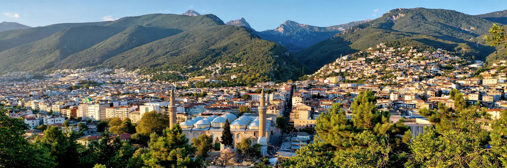

Bursa is a city in northwestern Turkey, in the southern Marmara region, lying on the slopes of Mount Uludağ. The capital of Bursa Province and Turkey's fourth-most populous city (metropolitan population over 3 million), it was the first major capital of the Ottoman Empire and is famed for silk, thermal baths, İskender kebab and its early Ottoman monuments, inscribed by UNESCO in 2014.

Founded as Prusa by King Prusias I of Bithynia, the city passed to Rome and Byzantium, celebrated for its hot springs. After a decade-long siege Orhan captured it in 1326 and made it the first Ottoman capital; his father Osman's tomb is there. Though Edirne and then Constantinople succeeded it, Bursa remained a royal necropolis and a great silk-trading and manufacturing centre on routes from Persia and China.
Landmarks include the Grand Mosque (Ulu Cami, 1399, with twenty domes), the Green Mosque and Green Tomb of Mehmed I, the bazaars of the silk trade (Koza Han), and the Cumalıkızık village. Today Bursa is a hub of Turkey's automotive industry (with plants of Fiat/Tofaş and Renault), textiles, food processing and winter tourism on Uludağ, a major ski resort.
Recreated from memory.